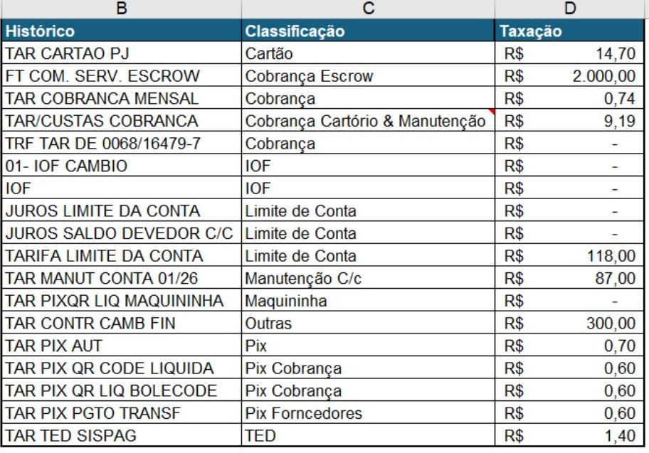
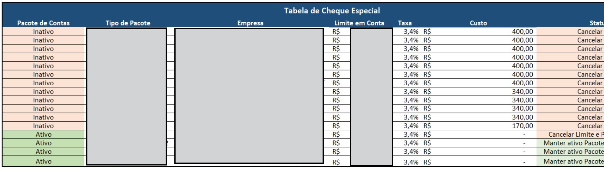
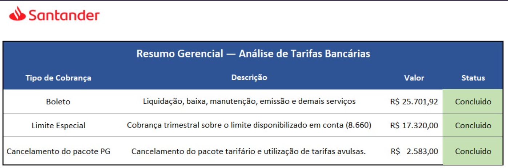
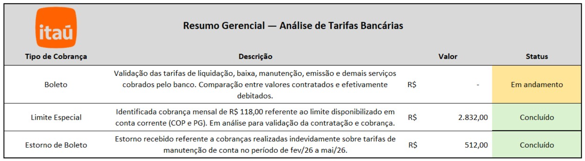

Contexto
O desafio
Durante o acompanhamento do orçamento financeiro da empresa, identifiquei que os gastos anuais com tarifas bancárias já haviam consumido mais da metade do valor previsto ainda em maio de 2026.
Apesar do impacto financeiro, não existia um acompanhamento detalhado das tarifas cobradas pelos bancos, impossibilitando identificar cobranças indevidas, valores superiores aos contratados e oportunidades de redução de custos.
Diante desse cenário, desenvolvi uma análise completa das tarifas bancárias das empresas do grupo.
Objetivo
Desenvolver uma análise detalhada das tarifas bancárias dos bancos Santander e Itaú, consolidando informações de 16 CNPJs para identificar cobranças indevidas, validar valores contratados, propor oportunidades de economia e apoiar a tomada de decisão da Diretoria Financeira.
Processo
Minha atuação
Fui responsável por conduzir todo o processo de análise das tarifas bancárias, desde a consolidação da base de dados até a apresentação dos resultados para a Diretoria Financeira e instituições bancárias.
O projeto foi dividido em cinco etapas.
1. Consolidação da base
Extraí todas as tarifas cobradas pelos bancos Santander e Itaú, referentes a 16 CNPJs do grupo.
Em seguida, consolidei todas essas informações em uma única base de dados no Excel, permitindo uma análise padronizada das cobranças.
2. Classificação das tarifas
Após consolidar a base, desenvolvi uma classificação para identificar exatamente onde cada cobrança estava ocorrendo.
As tarifas foram organizadas em categorias como:
- Boletos
- PIX
- Limite de Conta
- Pacotes Bancários
- Tarifas Avulsas
- Cobranças Indevidas
Essa etapa foi essencial para identificar rapidamente os principais centros de custo e direcionar as análises.
3. Validação dos valores contratados
Com as tarifas classificadas, realizei um comparativo entre os valores contratados junto aos bancos e os valores efetivamente cobrados.
Também calculei o custo unitário de cada serviço bancário utilizando a relação entre o valor total cobrado e a quantidade de movimentações realizadas no período.
Essa análise permitiu identificar divergências importantes, como cobranças superiores às condições negociadas, além de oportunidades de economia e recuperação de valores.
4. Identificação de oportunidades
Com base nas análises realizadas, foram identificadas oportunidades como:
- Cancelamento de limites de conta sem utilização;
- Cancelamento de pacotes bancários com baixa utilização;
- Contestação de cobranças indevidas;
- Solicitação de reembolsos;
- Renegociação de tarifas bancárias.
5. Apresentação dos resultados
Após concluir as análises, preparei apresentações executivas para a Diretoria Financeira e para os bancos Santander e Itaú.
As apresentações contemplavam:
- Comparativo entre tarifas contratadas e cobradas;
- Evolução dos custos ao longo do período;
- Impacto financeiro identificado;
- Recomendações para renegociação e redução de custos.
Entregáveis
Resultado alcançado por meio da identificação de cobranças indevidas, renegociação de tarifas e otimização de serviços bancários.
Insights
Resultados Santander
- Economia: R$ 11.243,00
- Reembolsos: R$ 25.701,92
Resultados Itaú
- Economia: R$ 1.416,00
- Reembolso: R$ 512,00
Ferramentas utilizadas
- Excel
- PowerPoint
Competências demonstradas
- Entendimento do negócio
- Estruturação e consolidação de dados
- Análise crítica
- Geração de impacto financeiro mensurável
- Comunicação dos resultados para tomada de decisão
Evidências
As evidências visuais do projeto foram mantidas como parte do storytelling. Como os dados são sensíveis, os prints permanecem com informações confidenciais ocultadas.



